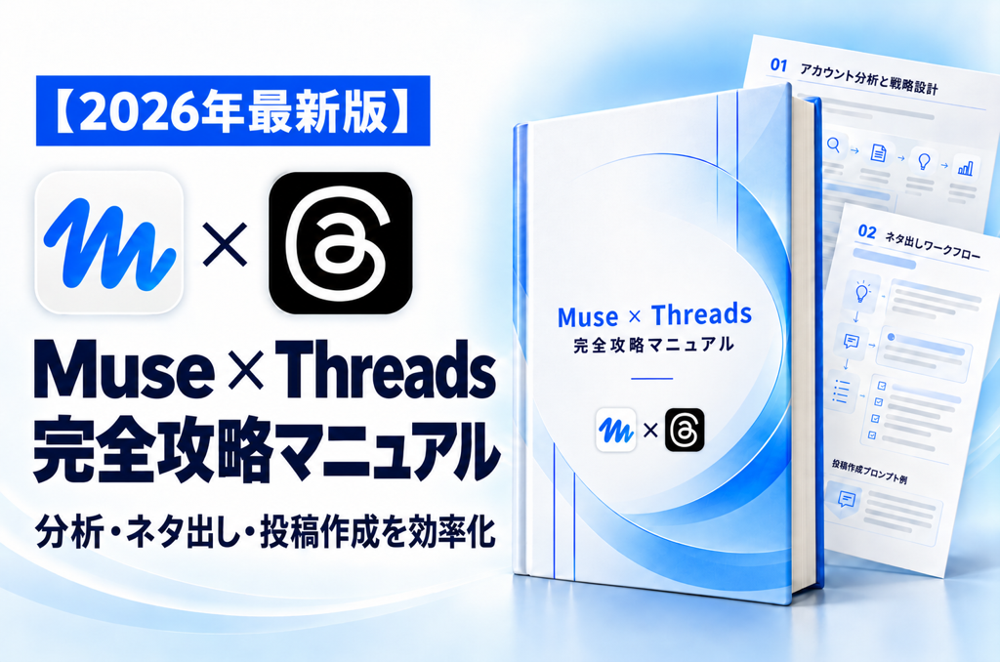
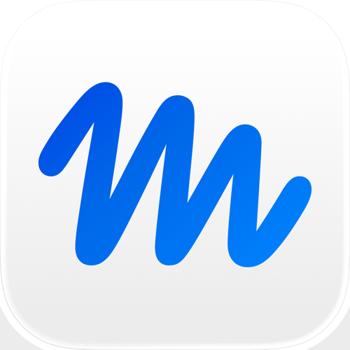

LINE登録者の方へお届けする特典

LINEへのご登録、ありがとうございます。
このマニュアルで、Museの導入から投稿分析・ネタ出し・下書き作成まで実践できます。
全6章・コピーして使えるプロンプト7本
このページを保存して、操作しながら読み進めてください
どーも、工藤です。LINEに登録してくださった方へ、Museを使ってThreads運用を進める手順をまとめました。
投稿を比べて、反応のよいテーマを見つける。
読者の悩みから、次に書く候補を用意する。
自分の経験を渡して、下書きを仕上げる。
全6章、コピーして使えるプロンプトは7本。順番に進めて、まずは次に出す1本を作りましょう。
Museに何を任せられるかを知り、自分のThreads運用に当てはめる。
Museは、InstagramやThreadsを提供するMetaのパーソナルAIエージェントです。会話で依頼しながら、情報を調べる・整理する・文章を作る作業を進められます。
Museには、InstagramやThreadsと連携する仕組みがあります。同じアカウントセンターにあるアカウントは、自動的に接続される場合があります。
接続できても、すべての指標が取得できるとは限りません。
過去の投稿を並べ、テーマ・書き出し・反応の違いを整理する。
読者の悩みと過去の反応から、次の投稿ネタを提案してもらう。
伝えたい結論と実体験を、読みやすい文章にまとめてもらう。
サロン向けのネタを出して。
一人でサロンを運営し、施術の合間に発信している人向け。予約案内の負担を減らすネタを出して。
自分の仕事、読者が困る場面、伝えたいこと。前提が具体的になるほど、提案を判断しやすくなります。
毎回ゼロから始めていた作業を、Museと分担できるようにする。
投稿を開く → 本文をコピー → 数字をメモ → AIへ貼り付ける。
「直近10投稿を一覧にして」と依頼 → 対象と内容を確認する。
専用のデータベースは必要ありません。まずは会話の中に、自分の投稿が10件並ぶ状態を作ります。
閲覧数だけでは、登録・問い合わせ・売上までは分かりません。
情報を並べる／切り口を出す／構成と下書きを作る。
実体験を足す／事実を確かめる／言葉を直す／公開を決める。
自分の10投稿を振り返れる一覧
今週試す5つのテーマ
自分の経験を入れた文章
プロフィールから案内する先
アプリを入れ、会話画面を開いて、最初の依頼を送る。

使っているスマホのボタンを押し、アプリ名と提供元を確認してください。
パソコンではMuseのWeb版を利用できます。料金や利用量は、アプリの申込み画面で確認してください。
紹介制度の対象であれば、利用できるトークンの特典があります。紹介した側にも特典が付きます。付与量・期限などの条件は、自分の画面で確認してください。
会話画面の左上にある二本線のボタンを押します。画像の赤丸が目印です。
メニューが開いたら、左下の歯車マークから「設定」を開きます。
設定の一覧から、プレゼントのマークが付いた「紹介コードを利用」を選びます。
6つの欄に1文字ずつ入力し、画面の下の「確認」を押します。
元の導入マニュアルの操作画像です。赤丸・赤枠が目印。タップで拡大できます。画面内の条件は撮影時点のものです。
次の投稿ネタを考えたい
自分の直近10投稿を使う
反応の共通点を3つに整理
自分の投稿を正しく読み込み、分析に使う一覧をそろえる。
接続済みの表示だけで進めず、最新の親投稿1件を出してもらいます。親投稿とは、自分が新しく立てた投稿のことです。
Threads集客の改善に使いたいので、私のThreadsアカウントを実際に読み取れるか確認してください。
ユーザーネームと、最新の自分の親投稿1件の本文・投稿日時・URLを表示してください。
親投稿とは、自分が新しく立てた投稿のことです。
未連携なら、現在利用できる接続方法を案内してください。
接続済みと推測せず、実際に読めた投稿を示してください。
複数のアカウントがある場合は、分析対象を私に確認してください。
この段階では読み取りだけを行ってください。【 】がある場合は、自分の内容に書き換えて送ります。
URLを開き、本文と日時を照合する。
合っていれば、10投稿の取得へMuseに接続方法を聞く。必要なら「設定 → コネクター」で対象を接続する。
同じ確認をもう一度行う途中で取得制限にかかり、確認する量も増えやすい。
見覚えのある投稿で照合しやすく、分析まで進めやすい。
今確認した私のThreadsアカウントから、直近10件の親投稿を取得してください。
返信と再投稿は対象から外し、10件未満しかない場合は、ある分で進めてください。
各投稿に番号を付け、次の情報をまとめてください。
・投稿日時
・投稿本文の全文
・投稿URL
・閲覧数
・いいね数
・返信数
・再投稿数
・引用数
・取得できる場合は、プロフィール訪問数と投稿経由のフォロー数
実際に取得した値だけを記載してください。
取得不可と未取得を区別し、推測や0で埋めないでください。
取得日時、タイムゾーン、取得できた件数を添えてください。
本文が長い場合は「本文一覧」と「数値の表」を分け、同じ投稿番号で対応させてください。
取得制限が出たら中断し、取得済みと未取得の件数を報告してください。【 】がある場合は、自分の内容に書き換えて送ります。
本文の全文／URL／投稿日時
閲覧・いいね・返信・再投稿・引用
取得日時／タイムゾーン／件数
プロフィール訪問・投稿経由のフォロー数は、取得できる場合だけ追加します。
返信・再投稿は今回の取得対象に含めません。親投稿しか読んでいない段階で、続きの返信まで評価しないようにします。
数字の順位を見て終わらず、次に試すテーマを3つ決める。
何を増やしたいかで、参考にする投稿が変わります。下は数字の読み方を説明する架空例です。
広く見られた話題の参考に
続けて読みたい内容の参考に
説明用の架空データです。これだけで登録・売上への効果は分かりません。
何について話している？
どんな場面で困る人に向けた？
手順・質問・体験のどれ？
最初の1〜2行で何を約束した？
結論・理由・具体例がどう並ぶ？
「数字を使った書き出しが多い。だから数字が効く」と決めてしまう。
反応が低い投稿にも数字があるなら、悩みの具体性や内容の違いも調べる。
取得した私のThreads投稿とデータを使って、集客に向けた発信の改善を考えたいです。
分析対象の件数・投稿期間・使える指標を示してください。
閲覧数の上位を最大5件、投稿番号・URL・数値付きで挙げてください。
投稿経由のフォロー数が取得できていれば、その上位も別に示してください。
取得していない指標のランキングは作らないでください。
上位以外の投稿とも比較して、次の項目を整理してください。
1. テーマ
2. 読者の具体的な悩み
3. 切り口
4. 最初の1〜2行の書き出し
5. 本文の構成
共通点には、根拠となる投稿番号と本文の短い抜粋を付けてください。
一般論だけで終わらず、私の投稿に即して説明してください。
親投稿しか取得していない場合は、返信まで読んだことにしないでください。
投稿からの経過時間や題材が異なるため、数字の差だけで原因を断定しないでください。
分かった事実と仮説を分け、判断できないことも明記してください。
Threadsの数字から、LINE登録・問い合わせ・売上を推測しないでください。
最後に、次に増やして試すテーマや切り口を3つ、理由付きで提案してください。【 】がある場合は、自分の内容に書き換えて送ります。
投稿ネタを選び、自分の経験を入れた下書きと運用計画を作る。
商品がまだ決まっていなければ、発信分野と届けたい相手から始めて構いません。過去に伸びた話題でも、読者や商品から離れるなら増やす必要はありません。
予約前に伝える項目のまとめ方
料金だけでなく時間も書くべき？
案内を1か所にまとめたときの工夫
説明用のネタ例です。経験談には、自分が実際に行ったことだけを使います。
今の投稿分析を使って、集客につながる発信を考えるための投稿ネタを20個提案してください。
私の仕事・サービス：【内容。まだ決まっていなければ未定】
発信テーマ：【テーマ】
届けたい相手：【どんな状況の人か】
その人の悩み：【具体的に困っている場面】
役立ちたいこと：【読者がどうなれるようにしたいか】
今回の目的：【認知／フォロー／プロフィール訪問／特典や相談への関心、から選ぶ】
反応がよかったテーマを掘り下げる案と、関連する新しい疑問や場面へ広げる案を含めてください。
過去投稿の言い換えばかりにしないでください。
各案に、番号、テーマ、読者の悩み、切り口、書き出し案、参考にした投稿や分析結果、私が補うとよい体験を付けてください。
新しい実験案は、その旨を示してください。
私が伝えていない実績・経験・数字は作らないでください。
取得していない成果を確認済みとして扱わないでください。
最後に、読者との相性、過去の反応、内容の重複、経験を添えやすいかを考え、先に試す5案と理由を示してください。
前提が不足する場合は、先に最大3つ質問してください。
この段階ではネタと書き出しまでを作ってください。【 】がある場合は、自分の内容に書き換えて送ります。
先ほどのネタ番号【番号】で、Threads投稿の下書きを一本作ってください。
届けたい相手：【読者】
一番伝えたい結論：【結論】
私の実体験・考え：【実際の経験や考えを箇条書きで】
投稿後に案内したい行動：【フォロー／プロフィールを見る／案内なし、など】
普段の文体：【参考になる自分の文章を貼る。なければ自然な話し言葉】
最初の1〜2行で、誰のどんな悩みに役立つ話か分かるようにしてください。
本文は、悩み→伝えたい結論→理由や具体例→読者ができること、の流れを基本に、内容に合う順序で作ってください。
案内が必要な場合は、本文とのつながりが分かる一文で添えてください。
1文を短くし、スマホで読みやすい改行を入れてください。
実績・体験・数字を創作せず、過剰な断定や不安を煽る表現は使わないでください。
不足する事実があれば、書く前に質問してください。
最後に、投稿前に私が確認する事実を短くまとめてください。
下書きだけを作り、公開や予約投稿はしないでください。【 】がある場合は、自分の内容に書き換えて送ります。
存在しない特典・実績・締切は書きません。
Threadsの投稿を読んだ人が、私のサービスや特典を理解し、次の行動を選びやすいか確認してください。
届けたい相手：【読者】
提供する仕事・サービス：【内容】
今回の投稿：【下書き】
今のプロフィール文：【全文】
プロフィールのリンク先で案内している内容：【見出し・説明・受け取り方法など】
用意済みの特典や相談：【実際にあるもの。なければなし】
投稿で扱う悩み、プロフィールの説明、案内先の内容がつながっているか見てください。
読者が迷う点を3つ以内に絞り、理由を説明してください。
そのうえで、プロフィール文と投稿末尾の案内文を、それぞれ修正案として出してください。
存在しない特典、実績、料金、締切は作らないでください。
この情報だけでは確認できないことは明記してください。
リンク先の情報が足りない場合は、必要な部分を質問してください。
提案と文章案だけを作り、プロフィール変更や投稿は行わないでください。【 】がある場合は、自分の内容に書き換えて送ります。
ここで整えるのは、あなた自身の読者が進む導線です。このマニュアルを受け取ったあなたが、再度LINE登録をする必要はありません。
作業の分け方の例です。投稿本数と時間は、自分の生活に合わせて調整します。
ここまで決めた読者、投稿ネタ、下書き、案内先を使って、無理なく続ける1週間のThreads運用計画を作ってください。
運用に使える時間：【例：平日20分、週末60分】
今週投稿できそうな本数：【本数】
優先する目的：【目的】
すでに完成した下書き：【番号や本文】
ネタ選び、下書き作成、自分の確認、投稿、振り返りを、使える時間の中に配置してください。
似た内容ばかりにならないようにし、各投稿で何を試すかを一つずつ添えてください。
作業量が時間に収まらない場合は、減らす案を出してください。
振り返りで見る数字と、次に判断することも示してください。
確認できない登録数・問い合わせ数・売上は推測しないでください。
計画だけを作り、投稿予約や定期実行は設定しないでください。【 】がある場合は、自分の内容に書き換えて送ります。
対象アカウントを確認して、実際の投稿を表示できるまでは、数字の分析に進みません。
分析したい自分の投稿がまだ表示されません。接続状況を確認し、次に操作することを一つずつ案内してください。画面を確認できない場合は、ボタン名や位置を推測せず、必要な画面を教えてください。
「制限」「429」などが出たら、まず取得済みのデータを使います。
追加取得はいったん止め、取得済みと未取得を分けてください。今あるデータで分析し、件数が足りず判断できないことは明記してください。
この数値の投稿URL、取得日時、指標名、取得元を説明してください。確認できない部分は不明とし、確認が済むまでその数値を使った判断から外してください。
取得不可は0ではありません。使える項目で分析を進めます。
私の投稿と読者の具体的な悩みに当てはめてください。分析なら根拠の投稿と次に試すこと、ネタなら困る場面と伝える内容まで具体化してください。
次の文章が私の普段の言い方です。【自分の文章】。下書きの意味を保ちながら、言葉遣いや文の長さを近づけてください。私が話していない経験や数字は加えないでください。
実績から判断できることと、できないことを分けてください。投稿がない場合は、私の仕事と届けたい相手を確認し、最初に試すネタを10個提案してください。実績に基づく成功パターンとは扱わないでください。
自分が答えられる質問や、実際に試したことから1本作ります。その投稿が、次の振り返りの材料になります。
| 順番 | 何をするか | 完成するもの |
|---|---|---|
| ① | Threadsを読み込む | 自分のアカウントと投稿の確認 |
| ② | データを集める | 本文と数値の一覧 |
| ③ | 傾向を分析する | 次に試すテーマ・切り口3つ |
| ④ | ネタを出す | ネタ20案と優先する5案 |
| ⑤ | 投稿を作る | 自分の経験を使った下書き |
| ⑥ | 集客への案内を整える | プロフィール・案内文の修正案 |
| ⑦ | 続ける計画を作る | 投稿と振り返りの週間計画 |
2回目以降は、対象アカウントを確かめて、②でデータを更新してから振り返ります。これらのプロンプトは、依頼した時点の作業を進めるものです。投稿の自動公開や毎週の定期実行は設定されません。
自分の投稿を読み込む。反応のよいテーマを見つける。ネタを選び、自分の経験を足して仕上げる。この一周を、まずは一度やってみてください。
次は、自分のアカウントで集客につなげる
Museで投稿を作れるようになったら、次は「誰に届けて、どこへ案内するか」。
自分のジャンルに合わせた投稿設計と導線を、セミナーで具体的に学べます。
LINEでお届けしているセミナーの申込みフォームが開きます。